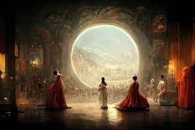

AI Art is crazy advanced! There is no end to how insane AI can completely
change art as we know it. The pure concept of a machine writing a master piece
is undoubbtly wild. Shown below is an image that an AI created from just key
phrases, and in this case that was “Space Opera Theater”. After tweaking the AIs
overall inputs, he created the masterpiece shown. It is very beautiful
in my opinion, and deserves recognition among artists for being that way.
However, some artists are fuming that this is even a possibility. Jason M. Allen
actually submitted this image to an art competition and won it, being accused
of cheating after revealing how the art was done. Is it cheating? Is this
too far for AI? I don't know, I think it is pretty cool! The fact that a machine
can just take in words and spit out a masterpiece is totally inspiring for the
progress of AI. It may be a little scary as it seems that AI is beginning to
create, even with human guidance. The thing is, what is discovery without any fear?
What is the point of even starting to create AI if we don't expand on its possibilities
and its potential? This art is not hurting anyone, so although it is scary,
let it create masterpieces for its creators.

Why I think Star Wars has a Bright Future.
Star Wars is the most popular movie franchise of all time, it has stayed in high
relevance for 40ish years, and continues to reign as one of the most popular properties
today. Despite all of this being said, many people believe the death of Star Wars is
coming, not because of lack of funding or viewer fatigue, but because Disney bought it.
Disney is one of the biggest companies ever, and its success with Marvel and orginal
productions proves they are capable of making good movies. However, they make lots of family
friendly content, and many Star Wars fans are concerned the future of Star Wars
will be kiddish and too light to satisfy all audiences. Here is where I disagree,
because I believe that everyone can get good Star Wars thanks to the massive wallet that
Disney has. They can make many movies, shows, animated features, comics and more thanks
to the near unlimited resources they possess. They will definitely make some kiddish shows and
movies, but they can afford to do so while also making dark and gridy movies and TV that this
story has never seen before. I think we are lucky to live in a time where mass money is
being poured into something we all enjoy. Disney will make a few misses, but my hopes are they
make enough hits to keep the Star Wars universe going for years to come.